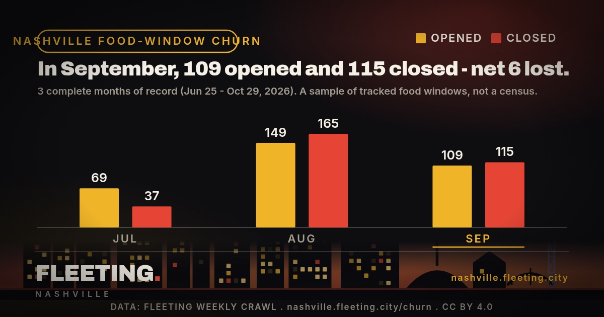

In September, 109 opened and 115 closed - net 6 lost. This is the churn cut of Fleeting's weekly crawl, drawn as one image you can repost anywhere. The credit is baked into the picture, so it travels even when the link does not. Free to use under CC BY 4.0.

Paste this where you can use HTML (it links back and keeps the alt text):
<a href="https://nashville.fleeting.city/steal-this-chart/"><img src="https://nashville.fleeting.city/steal-this-chart/chart.png" alt="Nashville food-window churn by month, from Fleeting" width="1200" height="630"></a>
If your platform strips images of their caption, this is the credit (the image already carries it):
Chart: Fleeting - Nashville (nashville.fleeting.city/churn), CC BY 4.0
The numbers are the same ones on the Fleeting Churn Rate: distinct time-limited food and drink windows from our weekly discovery crawl, counted by the month they opened or closed. We report only calendar months we watched end to end (Jun 25 - Oct 29, 2026) - the partial first month and the current, unfinished month are left out. A short window that opens and closes between two weekly crawls can be missed: this is a sample of the curated windows Fleeting tracks, not a census of every restaurant change in Nashville. Figures and methodology, with JSON and CSV, live on the churn page.
Most of these windows close within days. That is the whole reason Fleeting exists. The Thursday list is the week's time-limited Nashville food, drink and events - the ones gone by the weekend - in your inbox while they are still open. One email a week, no alerts.
Get the Thursday list, free →Built October 31, 2026. Want the full table? the Fleeting Churn Rate.